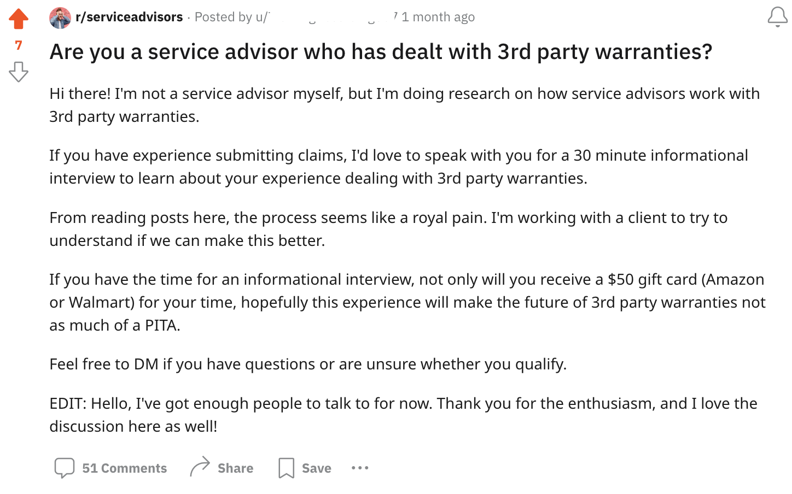
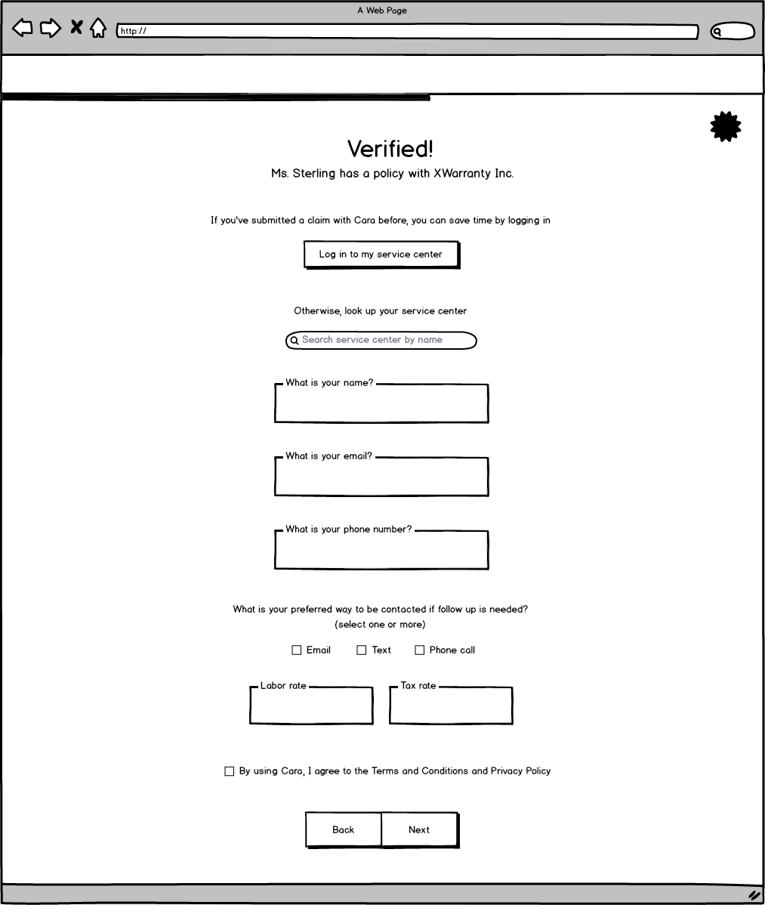
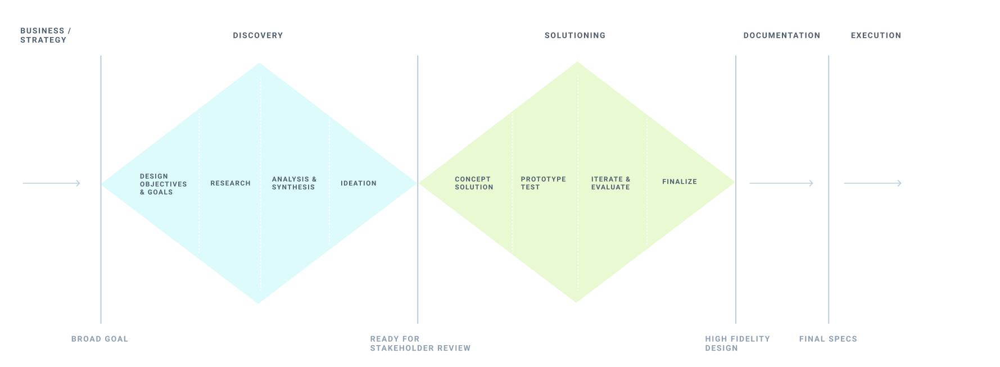

Anomaly
Building a better warranty claims experience with the power of LLMs
What is Anomaly?
Anomaly is a venture-backed startup building a next-generation claims experience for the companies who process and adjudicate claims for third-party auto warranties.
Problem exploration and convergence
When I was brought on, Anomaly was a small team of engineers who had pivoted away from web3 security. They wanted to try to use LLMs to automate third-party warranty claims adjudication, but had only a vague idea of how it would be done on the UX front.
I quickly picked up what the team had already learned about third-party administrators (TPAs) and how the industry worked. The team had scheduled upcoming conversations with TPAs who were exploring LLMs and were thus open to exploring how the team could accelerate their AI transformation.
The general opportunity was understood: warranty claims were a very manual process. Claims require call center agents to manually ask additional questions, make a decision, and send payment info. These call centers faced the challenge of high employee turnover and lots of training for new employees.
Anomaly believed this could be better done by AI.
The question was how?
I realized that until we landed a customer, it would be hard to dig into the agent side to understand how to make claims more efficient on that side.
However, in order to pitch to TPAs, we needed to show that we've thought of a preliminary solution.
Having identified that as the goal, I realized the team had a knowledge gap in how claims are currently submitted by service centers.
Bringing my knowledge with guerilla research, I scanned r/serviceadvisors to learn the lingo and standards of the space and leveraged a post to schedule 6 service advisors to talk to. There was so much interest I had to remove the scheduling link the next morning since we had more participants than needed.
What I talked to service advisors about
| Question | Purpose of question | Insights |
|---|---|---|
| What % of time do you spend talking to customers in-person vs customers on the phone, email, or text vs in the bays, talking to techs? | To understand how service advisors spend their days, and how they typically communicate with customers |
|
| Do you have a warranty admin? | To understand how pervasive warranty admins are, and how service advisors split responsibilities with warranty admins |
|
| Does your dealership sell a 3P warranty? | To track if this has correlation with other answers | Dealers all sold their own 3P warranty, whereas no IRF did. |
| Out of 100 repair orders, what % are covered with 3P warranty? What % are someone else's 3P warranty? | To understand how often a service advisor is dealing with a 3P warranty in general, and how often they are dealing with their own |
|
| What's the process like for filing claim? Are some easier than others? Are some faster or more likely at getting approved than others? | To understand how service advisors are currently filing claims, and whether there are standout experiences |
|
| How often is there a back and forth? Or a straightup denial of the claim? | To understand what generally happens after a claim is filed but not immediately approved |
|
| Are there ever times when you don't want to handle a third party warranty claim and you tell the customer they have to pay out of pocket? | To understand if some types of claims or third-party warranty providers have a reputation of being too hard to deal with |
|
| How does the warranty administrator pay you? | To understand how money actually goes from the TPA to the service center | Almost every service center receives payment via a virtual credit number provided by the TPA. |
| What software do you use day to day? | To understand how Anomaly would fit into their existing software set, and what we might need to integrate with |
|
What I learned about service advisors
| Who becomes service advisors | What service advisors do day-to-day | What roles service advisors work with | What service advisors care about |
|---|---|---|---|
|
|
|
|
Quotes from service advisors
It takes up about an hour or two of your time any time a customer calls in with one.
CarShield ****ed me today. Good times. Sending all their own parts and knocked down all of my pro demand labor times. That's after it took a week for them to respond to me.
I’m at 42 days for an engine approval from Carshield after taking all the pictures and videos they request.
Problem opportunities that arose from talking to service advisors about 3p warranties
By involving engineering and product in these interivews, I was able to bring them along the discovery process.
IRF service advisors report the most pain and dissatisfaction with 3p warranties
Dealer service advisors are more likely to deal with their own in-house warranty product, to use an online portal for claims submissions, and are less likely to say it's painful. IRF service advisors are more likely to use the phone for claims filing and often report negative experiences — for example being on hold for an hour, playing phone tag with the TPA agent, or having disagreements about parts cost
Several pain points found for service advisors
- Being on hold with TPA
- Having back-and-forths with TPA on parts pricing
- Customers believing that the warranty product should cover the entire bill
- Asking customers to pay the part of the bill not covered by their warranty
- Having to keep their customer updated on the status of the warranty claim
- The TPA requiring additional evidence, like proof of oil changes, which the service advisor then has the ask the customer for
Usually at this point, it's a good idea to narrow down and prioritize one problem to solve. However, due to the client's circumstances, I was tasked with designing a prototype that solves for all of these pain points.
Solution exploration and convergence
Because the client had a very tight deadline for showing our claims submission solution to potential customers, I took the approach of producing a "best guess flow" based on A) initial conversations with service advisors and B) the team's institutional knowledge.
I then iterated on the flow and UI details based on additional feedback sessions with service advisors who opted in to the customer development program I started.
Entry points
The entry point is how a user enters into a flow. In this case, I realized we could approach the product in two very different ways.
Shop registration
This approach makes account creation an implicit part of the claim submission flow. This is based on my research that showed service advisors find value in having one place to follow up on claims, yet had some hesitancy about creating accounts.
From my research, I found that different service advisors had different preferred ways of communicating with TPAs — some liked the immediacy of phone, others always prefer email. This design gives agency to the service advisor to choose their preferred communication method.
Entering in repair info
Some of the things changed came from feedback sessions with service advisors:
- Service advisors have an industry standard terminology, the 3 C's — complaint, cause, correction — and they expect the repair entry to reflect that rather than some alternative wording
- Usually parts and labor are not lumped together, but rather separated into different jobs, and each job usually needs to be matched to a single complaint + cause
- Photos need to be uploaded as part of a specific job, not as part of the entire claim
AI follow up

This is where the AI works. Based on repair data entered by the service advisor, Cara can ask follow up questions if needed. This step is designed so that the AI can generate different follow up questions for each repair.
Authorization and payment
Cara is designed to both automate processes for TPAs and make claims better for service advisors. AI adjudication helps TPAs reduce cost, while also helping service advisors get their claim paid more quickly.
Getting the solution ready for prospects
What Anomaly needed was not engineering-ready tickets, but a well-thought through product and set of mockups that could be shown to TPAs in sales calls. Here are some designs I created that helped the team land its early deals.
Centering on the problem, not the tech
While the client's number one request was product mockups to demonstrate to customers, the added value of my work with Anomaly was in producing research that helped the team reorient to a problem space and to build up the muscle (and customer development program) to regularly co-design with users. As the team onboards TPAs, the next step will be to run this discovery and design process with call center agents at third-party warranty providers to learn their pain points and see how software can make their work better.
I had the pleasure of working alongside Andrew at a 0 to 1 tele-health start up for 6 months. He cares deeply about the customer journey and designing useful (&fun!) experiences. Instrumental in quickly turning around a beautiful pitch deck for potential partnership. His designs are elegant and effective. Great teammate and an asset to any start up!
 Rachel D. M.D.
Medical Director @ Zest Dermatology
Rachel D. M.D.
Medical Director @ Zest Dermatology
Andrew worked with us to turn an ambiguous product vision into tangible mockups and prototypes that we were able to test with customers, and eventually raise a seed round for. Andrew has a keen product sense, even for a highly technical product like ours. He’d be a great asset for any founding teams navigating the 0 to 1 stage.
 Lauren L.
CTO @ Ampersand
Lauren L.
CTO @ Ampersand
During my time working with Andrew, I immediately noticed his uncanny ability to ask precisely the right questions and welcome design challenges right out of the gate. He’s unfazed by tough UX problems, and approaches solutions with a high curiosity and ability to execute. I would hire Andrew in a heartbeat.
 Shemoel R.
Principal Product Designer @ Curology
Shemoel R.
Principal Product Designer @ Curology
I appreciated Andrew's attention to detail, the questions he asked to get a full picture of us and our clients, as well as pushing us to quantify success metrics we were expecting from the redesign. I am sure that Andrew will be an asset to any team in the future!
 Erin T.
Director of Business Operations @ Retention Science
Erin T.
Director of Business Operations @ Retention Science
Andrew's style and approach to thinking through product problems were thorough and thoughtful. He is excellent at handling edge cases that helped bring clarity and speed to engineering teams. Finally, his attention to detail resulted in designs that I am proud to have helped ship.
 Jennifer L.
Senior Product Manager @ New Relic
Jennifer L.
Senior Product Manager @ New Relic
He took an incredibly thoughtful approach to both projects and worked cross functionally with analytics, customer success, design, and product. I was impressed with his proactiveness in looking into product metrics and his drive to interview users and internal stakeholders to gain a full understanding of the problem space. He is also eager for and receptive to feedback and has a growth mindset. He is a great person to have on your team!
 Megan M.
Senior Product Designer @ Alation
Megan M.
Senior Product Designer @ Alation
Andrew understands the technical details while still caring deeply about the customer's problems and journey. His collaboration with product has been invaluable to building the best experiences for our users. I highly recommend Andrew!
Tori M.
Principal Product Manager @ New Relic
Andrew is an absolutely incredible designer and person. His keen visual eye and extreme user empathy make will make him invaluable wherever he lands next. Highly recommend!
Colin P.
Design Lead @ Alation
Fantastic designer: eager to collaborate, skilled at coming up with creative solutions to difficult UX challenges, great communicator. Very small ego and a joy to work with. Andrew is my go-to designer any time I have a difficult UX problem often resulting in me walking away from the conversation with a, "Now why didn't I think of that?"
Garrett O.
Senior Software Engineer @ New Relic
Andrew is quick to action and puts his excellent visual design skills to work. He's highly responsive, circumspect, and iterative in his designs. Andrew brought a wonderful vivacity to the Alation design team, diving right into new content, processes, and critiques, while always staying focused on ways for himself and the team improve. He would be a great addition to any design team.
David T.
Senior Product Designer @ Alation
Andrew and I worked together when he was interning at Curology. It was a pleasure to work together with Andrew who always brought a lot of excitement for working in design and learning new things. I'm impressed by the way he was able to tackle difficult UX challenges. He always sought to learn more and contribute to the team, including a lot of work around accessibility.
Ida S.
Product Designer @ Curology